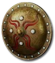
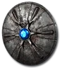
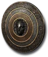
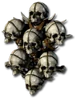
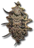
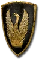
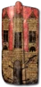
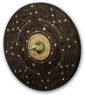
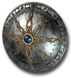

Pelta Lunata
Buckler
Defense: 4-6
Required Level: 2
+30 Defense
+10 to Vitality
+5 to Strength
+10 to Energy
+30-40% Enhanced Defense
20% Increased Chance of Blocking
+40% Faster Block Rate
+8-12 Maximum Durability
Unique Shield
Pelta Lunata
- Type
- Shield
- Base
- Buckler
- Tier
- Normal
- Required level
- 2
- Item level
- 1
- Required strength
- 10
- Max sockets
- 1
Other unique Shields

Umbral Disklevel 9
Stormguildlevel 13
Wall of the Eyelesslevel 20
Swordback Holdlevel 15
Steelclashlevel 17
Bverrit Keeplevel 19 The Wardlevel 26
The Wardlevel 26- Visceratuantlevel 28

Moser's Blessed Circlelevel 31
Stormchaserlevel 35- Tiamat's Rebukelevel 45
 Gerke's Sanctuarylevel 44
Gerke's Sanctuarylevel 44